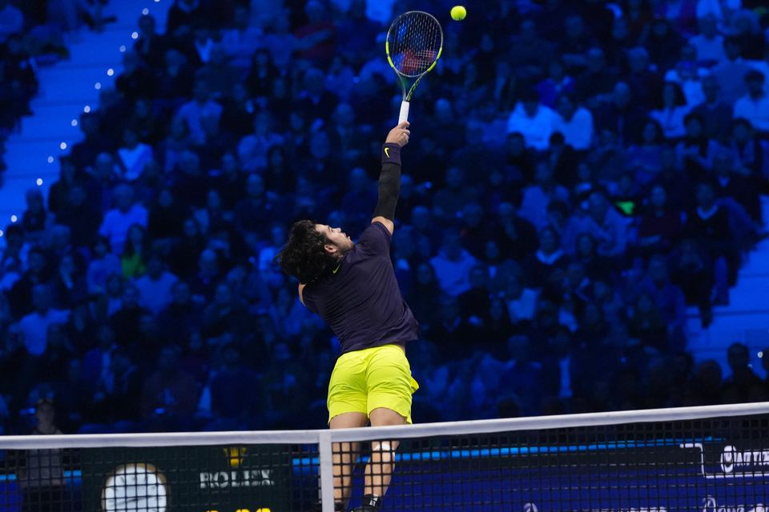

Alcaraz, más y mejor contra Medvedev... con susto incluido en la pierna

El murciano logra su segunda victoria en la liguilla (6-2 y 6-4) y, tras sufrir un percance muscular, aguarda al Tiafoe-Cobolli para sellar el pase a semifinales
Consigue Carlos Alcaraz que lo de un fabuloso jugador como Daniil Medvedev, realmente bueno, quede reducido a un trámite. Como si fuera rutinario. No lo es, de ningún modo. Señor tenista el ruso, al que no le queda otra que rendirse a los hechos que le niegan, a la ya conocida evidencia. No hay manera, nadie lo frena: tampoco esta pista veloz de Turín —45.8, según las métricas; es decir, muy rápida— le ayuda a contrarrestar la fantasía rocosa del español , que firma en la cámara — check , son ya dos de tres en la fase de grupos— y da un gigantesco paso hacia las semifinales con otro despliegue devastador e incontestable: 6-2 y 6-4, en 1h 09m. Y eso que ha habido susto. Ha sido en mitad del…